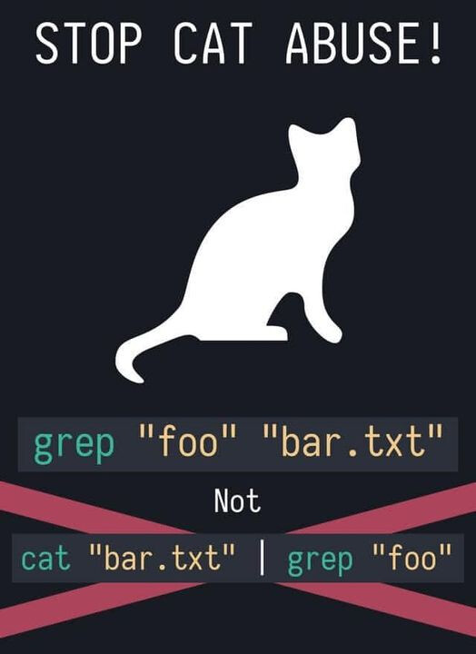

Administración de servidores GNU/Linux
Clase 6: Lectura, comparación y búsqueda de archivos
Módulo 1 — Operación de Sistemas Operativos GNU/Linux
Temas de clase 6
Objetivos de la clase
Al finalizar esta clase vas a poder:
- Seleccionar nombres con comodines y controlar su interpretación con comillas.
- Elegir cómo consultar un archivo según su tipo y tamaño.
- Observar una parte del contenido y obtener conteos básicos.
- Comparar archivos y leer una diferencia unificada.
- Buscar archivos por nombre y líneas por contenido.
- Conectar dos comandos mediante una tubería.
Por qué vemos este tema: para administrar un servidor necesitamos localizar configuraciones, consultar logs y comparar versiones sin modificar los archivos.
Elegir según la tarea
| Necesidad | Herramienta |
|---|---|
| Identificar un archivo | file |
| Mostrar o recorrer contenido | cat / less |
| Ver el comienzo o el final | head / tail |
| Contar contenido | wc |
| Comparar dos versiones | diff |
| Buscar un nombre | find |
| Buscar texto | grep |
Primero definimos qué necesitamos. Después elegimos el comando.
Comodines y comillas
Seleccionar nombres antes de ejecutar
Un patrón no es un nombre literal
Supongamos que el directorio contiene:
acceso-01.log
acceso-02.log
acceso-final.log
error-01.log
inventario.txt
ls acceso-*.log
Bash expande el patrón antes de ejecutar ls.
ls recibe los nombres encontrados, no el asterisco.Los comodines básicos
| Patrón | Coincide con | Ejemplo |
|---|---|---|
* | Cero o más caracteres | *.log |
? | Exactamente un carácter | acceso-0?.log |
[abc] | Un carácter de la lista | informe-[abc].txt |
[0-9] | Un carácter del rango | acceso-0[1-9].log |
ls *.log
ls acceso-??.log
ls acceso-0[12].log
ls archivo*[0-3]
Los comodines se pueden combinar. archivo*[0-3] comienza con archivo y termina con un dígito del 0 al 3.
Alcance y nombres ocultos
- Los comodines trabajan sobre nombres, no sobre el contenido.
logs/*.logbusca dentro delogs, pero no recorre sus subdirectorios.*no incluye normalmente nombres que comienzan con punto.
ls *
ls .*
ls -a
Para observar archivos ocultos suele ser más claro utilizar ls -a.
Cuando no hay coincidencias
ls *.respaldo
ls: cannot access '*.respaldo': No such file or directory
En la configuración habitual de Bash, el patrón sin coincidencias queda sin expandir.
Antes de operar sobre varios nombres, conviene revisar la selección:
ls -- logs/*.log
Comillas y barra invertida
ls '*.log'
ls "*.log"
ls \*.log
En los tres casos, Bash protege el asterisco y no lo expande.
- Comillas simples: conservan literalmente todo su contenido.
- Comillas dobles: conservan espacios y comodines, pero permiten expansiones como
$VARIABLE. - Barra invertida: protege solamente el carácter siguiente.
ls "Documentos del curso"
ls Documentos\ del\ curso
Consultas
Patrón → expansión de Bash → coincidencias → previsualización
Identificar y leer archivos
Consultar sin modificar
No todo archivo contiene texto legible
file /etc/os-release
file /bin/ls
file /usr/share/man/man1/ls.1.gz
/etc/os-release: symbolic link to ../usr/lib/os-release
/bin/ls: ELF 64-bit LSB pie executable ...
/usr/share/man/man1/ls.1.gz: gzip compressed data ...
file inspecciona el contenido y otros indicios. No decide solamente por la extensión.
Primero identificamos el archivo. Después elegimos cómo consultarlo.
cat: mostrar contenido archivos
cat /etc/os-release
cat /etc/hostname /etc/hosts
cat -n /etc/os-release
- Su nombre proviene de concatenate.
- Con varios archivos, muestra sus contenidos en orden.
-nagrega números a las líneas.
Resulta adecuado cuando el contenido entra en la pantalla. Para archivos extensos conviene less.
cat muestra la salida. No modifica el archivo.less: recorrer sin editar
less /etc/services
↓ o j | Avanzar una línea |
↑ o k | Retroceder una línea |
Espacio | Avanzar una pantalla |
b | Retroceder una pantalla |
g / G | Comienzo / final |
/texto | Buscar |
n | Repetir la búsqueda |
q | Salir |
less permite recorrer y buscar dentro de configuraciones o logs extensos sin abrirlos en un editor.
less y more
more /etc/services
more también muestra texto por pantallas.
- Ofrece una implementación más sencilla.
- Tiene menos posibilidades de navegación.
- Puede aparecer en otros sistemas o procedimientos.
En el curso utilizaremos less como visor principal.
Archivos .gz
cp /etc/services servicios.txt
gzip -k servicios.txt
zcat servicios.txt.gz
zless servicios.txt.gz
gzip -kcreaservicios.txt.gzy conserva el original.zcatenvía el contenido descomprimido a la terminal.zlessabre ese contenido en el visor paginado.
gzip comprime archivos individuales. El empaquetado de directorios con tar se verá más adelante.
Consultas
Identificar → archivo breve o extenso → texto normal o comprimido
Principio, final y conteos
Consultar solo lo necesario
El comienzo con head
head /etc/passwd
head -n 5 /etc/passwd
head -n 3 /etc/hosts /etc/services
- Sin opciones, muestra las primeras diez líneas.
-npermite elegir otra cantidad.- Con varios archivos, agrega un encabezado para cada bloque.
Es útil para comprobar rápidamente el formato y las primeras entradas.
El final con tail
tail /var/log/dpkg.log
tail -n 20 /var/log/dpkg.log
tail -f /var/log/dpkg.log
- Sin opciones, muestra las últimas diez líneas.
-npermite elegir otra cantidad.-fespera y muestra las nuevas líneas que recibe el archivo.
Ctrl + C interrumpe el seguimiento y devuelve el prompt.
Contar con wc
wc viene de word count, “conteo de palabras”. Sin opciones informa líneas, palabras y bytes.
wc /etc/passwd
wc -l /etc/passwd
wc -w /etc/services
wc -c /etc/hosts
| Opción | Cuenta |
|---|---|
-l | Líneas |
-w | Palabras |
-c | Bytes |
-m | Caracteres |
Bytes y caracteres
Un carácter Unicode puede ocupar más de un byte. Por eso wc -c y wc -m no siempre coinciden.
wc -c /etc/hosts
wc -m /etc/hosts
wc -l /etc/hosts /etc/passwd
Con varios archivos, wc informa cada conteo y agrega un total.
Contar líneas no explica qué significa cada entrada.
Consultas
Comienzo → final → seguimiento → conteo
Comparar archivos
Ver qué cambió entre dos versiones
diff: ver qué cambió
diff archivo-anterior.conf archivo-actual.conf
diffcompara el contenido de ambos archivos.- Si son iguales, no muestra diferencias.
- Una salida vacía puede ser un resultado válido.
El orden importa: primero la versión anterior y después la actual.
Diferencia unificada
diff -u archivo-anterior.conf archivo-actual.conf
diff --color -u archivo-anterior.conf archivo-actual.conf
--- archivo-anterior.conf
+++ archivo-actual.conf
@@ -1,2 +1,2 @@
puerto=22
-acceso_root=si
+acceso_root=no
-u agrega contexto. En GNU diff, --color resalta la salida cuando se muestra en una terminal.
Cómo leer la salida
---identifica el primer archivo.+++identifica el segundo.- Una línea con
-está en el primero y no en el segundo. - Una línea con
+está en el segundo y no en el primero. - Las líneas sin esos signos aportan contexto.
El color facilita la lectura, pero los signos conservan el significado.
diff describe la diferencia. La decisión sobre cuál versión es correcta sigue siendo nuestra.Comparar directorios
diff directorio-a directorio-b
diff -r directorio-a directorio-b
- Sin
-r, la comparación no desciende por todos los subdirectorios. - Con
-r, compara los archivos correspondientes en ambos árboles.
Cambiar el orden invierte los signos - y +.
Comparar no modifica ninguno de los dos lados.
Consultas
Primera versión → segunda versión → diferencias → decisión
Buscar por nombre
find recorre un árbol
Ruta inicial y tipo
find ruta criterios
find ~/documentos
find ~/documentos -type f
find ~/documentos -type d
- La ruta inicial define desde dónde comienza el recorrido.
-type fselecciona archivos regulares.-type dselecciona directorios.
Un punto de inicio demasiado amplio puede tardar y encontrar rutas sin permiso de lectura.
Buscar nombres con patrones
find ~/documentos -type f -name '*.log'
find ~/documentos -type f -name 'acceso-??.log'
find ~/documentos -type f -iname '*.conf'
-namecompara el nombre con el patrón.- Las comillas impiden que Bash expanda el patrón antes de tiempo.
-inameignora diferencias entre mayúsculas y minúsculas.
En este caso queremos quefind, y no Bash, interprete*.log.
Reducir los resultados
find /etc -maxdepth 1 -type f -name '*.conf'
find ~/documentos -type f -size +10k
find ~/documentos -type f -mtime -1
-maxdepth 1limita la profundidad del recorrido.-size +10kselecciona archivos mayores que 10 KiB.-mtime -1selecciona modificaciones de menos de 24 horas.
Los criterios se combinan. Cada resultado debe cumplirlos.
Consultas
Ruta inicial → recorrido → tipo → nombre o propiedad → resultados
Buscar por contenido
grep y tuberías sencillas
grep busca líneas
grep 'root' /etc/passwd
grep -n 'root' /etc/passwd
grep -in 'ssh' /etc/services
grep -w 'root' /etc/passwd
| Opción | Función |
|---|---|
-n | Muestra el número de línea |
-i | Ignora mayúsculas y minúsculas |
-w | Exige una palabra completa |
Nombre o contenido
find /etc -maxdepth 1 -type f -iname '*ssh*'
grep -in 'ssh' /etc/services
findbusca objetos por su nombre o propiedades.grepbusca texto dentro de un archivo.
Primero definimos qué estamos buscando: un archivo o una línea de texto.
Tuberías
El carácter | conecta la salida del comando de la izquierda con la entrada del comando de la derecha.
comando1 | comando2
grep -in 'tcp' /etc/services | head -n 5
grep produce las líneas y head conserva solamente las cinco primeras.
La tubería evita crear un archivo intermedio.
tee: mostrar y guardar
tee recibe datos por la entrada estándar y los envía a dos lugares: la terminal y uno o más archivos.
comando | tee archivo
head -n 5 /etc/services | tee muestra.txt
headproduce las cinco líneas.teelas muestra y también las guarda enmuestra.txt.- Sin opciones, reemplaza el contenido del archivo. Con
-a, agrega al final.
Su nombre recuerda a una conexión en T: una entrada continúa por dos salidas.
Cuando cat no aporta
cat servicios | grep -w 'ssh'
grep -w 'ssh' servicios
Ambas formas funcionan, pero grep ya sabe abrir el archivo.
cat sigue siendo útil para mostrar archivos breves o concatenar varios archivos.

Consultas
grep → coincidencias → tubería → segundo comando
Resumen de la clase
- Bash expande los comodines antes de ejecutar el comando.
- Las comillas y la barra invertida controlan la interpretación de caracteres especiales.
fileidentifica el contenido;catylesspermiten consultarlo.gzip -kconserva el original;zcatyzlessleen la copia comprimida.head,tailywcayudan a observar y medir.diff -umuestra diferencias con contexto y--colorfacilita su lectura.findbusca objetos;grepbusca líneas.- Una tubería conecta comandos;
teepermite mostrar y guardar la salida.
Actividad práctica
- Laboratorio 5: lectura, comparación y búsqueda de archivos